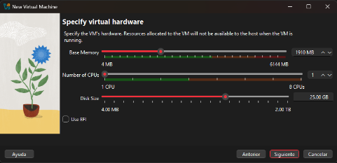

Bueno, para empezar, este proyecto consistía en instalar Ubuntu en una máquina virtual utilizando VirtualBox y documentar todo el proceso paso por paso mediante capturas de pantalla en un documento PDF. La idea principal era aprender cómo funciona la instalación de un sistema operativo Linux, familiarizarnos con el entorno de Ubuntu y utilizar algunos comandos básicos desde la terminal. Aunque al inicio parecía simplemente “instalar un programa”, realmente el proyecto llevaba bastantes pasos y requería tener cuidado para que todo funcionara correctamente.
Lo primero que tuvimos que hacer fue buscar y descargar una versión reciente de Ubuntu, en este caso la versión 22.04.3 LTS en formato ISO, desde la página oficial de Ubuntu. Después fue necesario descargar VirtualBox, que es un programa especializado en crear máquinas virtuales, básicamente computadoras simuladas dentro de nuestra propia computadora. Y sinceramente, ahí fue donde muchos empezamos a preocuparnos un poco porque daba miedo configurar algo mal y terminar dañando el sistema o haciendo explotar la laptop mentalmente.
Luego comenzó todo el proceso de instalación de Ubuntu dentro de VirtualBox. Primero hubo que crear la máquina virtual, asignarle memoria RAM, espacio de almacenamiento y conectar el archivo ISO para que el sistema pudiera arrancar correctamente. Después siguió la instalación de Ubuntu como tal, configurando idioma, teclado, usuario, contraseña y varias opciones del sistema. Y sinceramente, aunque los pasos parecían fáciles, siempre existía ese miedo de que apareciera un error raro y tocara empezar todo otra vez desde cero.

Además, una parte importante del proyecto era tomar aproximadamente 15 capturas de pantalla de todo el proceso para documentarlo en un PDF formal. Algunas de esas capturas tenían que demostrar que realmente estábamos usando nuestra computadora personal, así que prácticamente tocó tomarle foto a todo como si fuéramos investigadores documentando evidencia.
Después de instalar Ubuntu, también tuvimos que utilizar la terminal de Linux para ejecutar varios comandos básicos. Entre ellos estaban instalar programas como tree y zip, usar comandos para fusionar archivos de texto y visualizar contenido con head y tail. Y sinceramente, al inicio la terminal se miraba algo intimidante, porque uno está acostumbrado a hacer todo con ventanas y botones, pero aquí prácticamente todo era escribir comandos esperando no equivocarse en una letra.